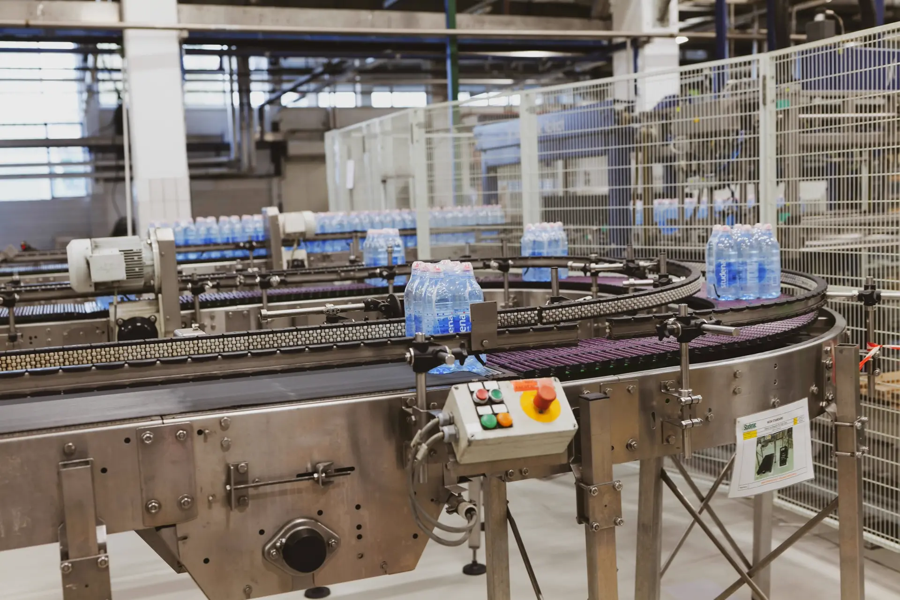
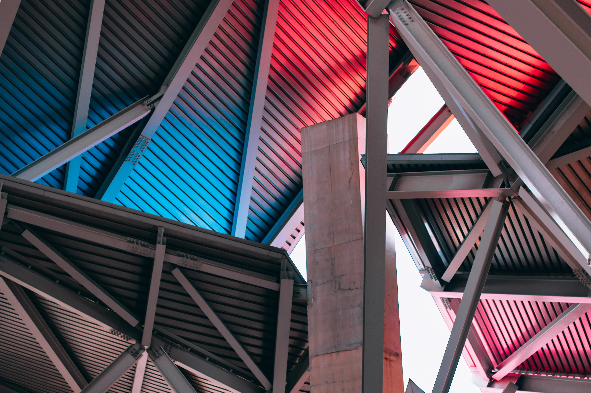
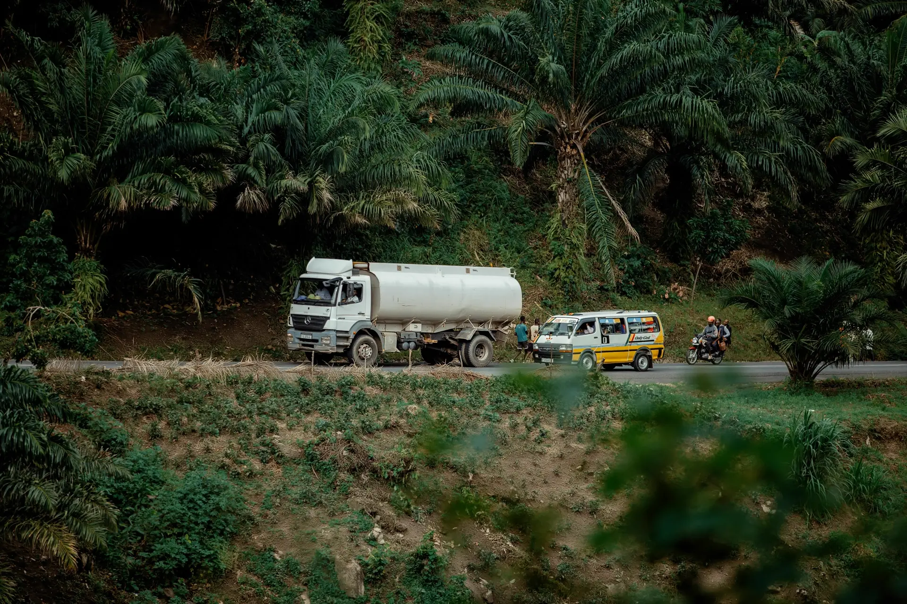

Przemysł spożywczy i medyczny
Dostarczamy gazy spełniające rygorystyczne normy bezpieczeństwa żywności, zgodnie z obowiązującymi przepisami prawnymi. Nasze produkty idealnie sprawdzają się do pakowania w atmosferze ochronnej oraz nasycania napojów. Butle posiadają odpowiednie oznaczenia barwne i czytelne etykiety, co gwarantuje najwyższy standard higieny. Jako pionierzy na rynku stosujemy zaawansowane systemy suszenia i sterylizacji wnętrza butli (technologia DRY-VAP), co jest kluczowe w branży spożywczej i medycznej.
Zaopatrujemy również szpitale, kliniki i gabinety prywatne. Specjalizujemy się w dostawach tlenu medycznego, medycznego podtlenku azotu oraz dwutlenku węgla, dbając o bezwzględne bezpieczeństwo i sterylność na każdym etapie dystrybucji.

Spawalnictwo, chemia i konstrukcje stalowe
Jesteśmy sprawdzonym partnerem dla przedsiębiorstw zajmujących się obróbką metali, budową konstrukcji stalowych oraz dla przemysłu chemicznego i hutniczego. Nasza wiedza pozwala nam doradzać klientom w optymalizacji procesów produkcyjnych, co przekłada się na redukcję kosztów i wzrost wydajności.
Dostarczamy gazy w postaci sprężonej (w butlach i wiązkach) oraz ciekłej do zbiorników kriogenicznych. Nasza oferta obejmuje argon, tlen, azot, dwutlenek węgla, hel, wodór oraz precyzyjnie dobrane mieszanki spawalnicze. Wykorzystujemy nowoczesne zawory zintegrowane i zapewniamy pełne wsparcie technologiczne oraz terminowe dostawy.

Nasze atuty i zaplecze technologiczne
Gwarantujemy sprawny i bezpieczny transport powierzonych zamówień - od ponad dwóch dekad zapewniamy terminowe dostawy dla naszych partnerów. Stawiamy na niezawodność, nowinki techniczne i ciągły rozwój. Nasz wykwalifikowany i odpowiedzialny personel gwarantuje obsługę na najwyższym poziomie, od przygotowania zamówienia po jego finalną realizację u klienta.
